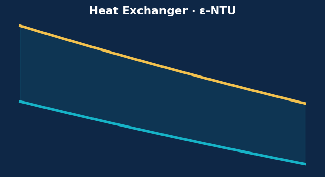
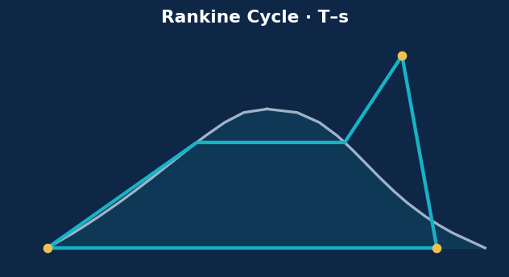
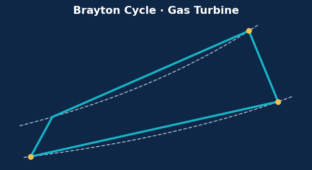

Heat transfer · ε-NTU
Counter-flow Heat Exchanger
ε-NTU design cross-checked with LMTD (<1% gap), real fluid properties and an area–performance design curve.
Open the case study →
Power cycles · Steam
Steam Power Plant — Rankine Cycle
T–s diagram, 33% efficiency, 0.88% back-work ratio, and the boiler-pressure / superheat / condenser optimisation.
Open the case study →
Power cycles · Gas turbine
Gas-Turbine — Brayton Cycle
The cycle behind the jet engine: efficiency, optimum pressure ratio, 56% back-work ratio, and the link to propulsion.
Open the case study →